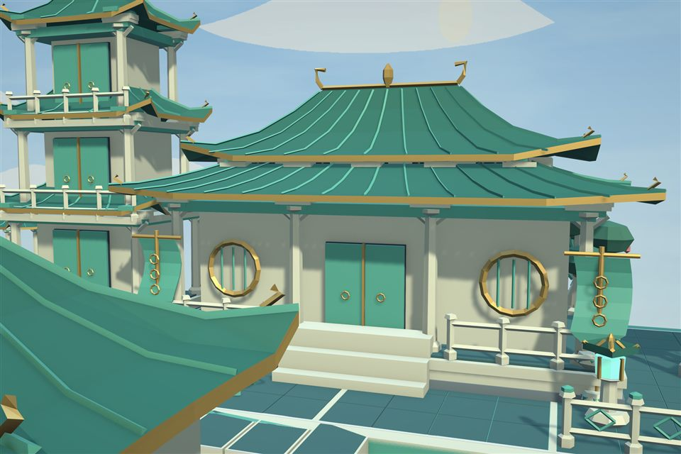
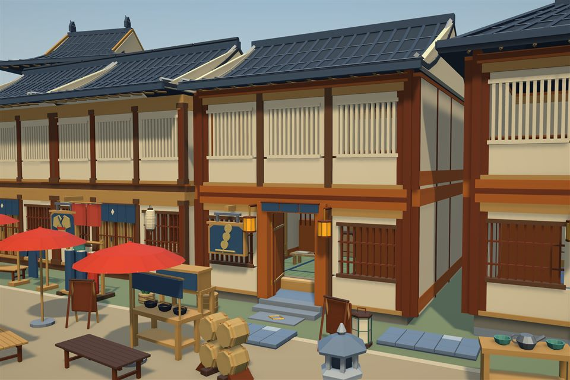
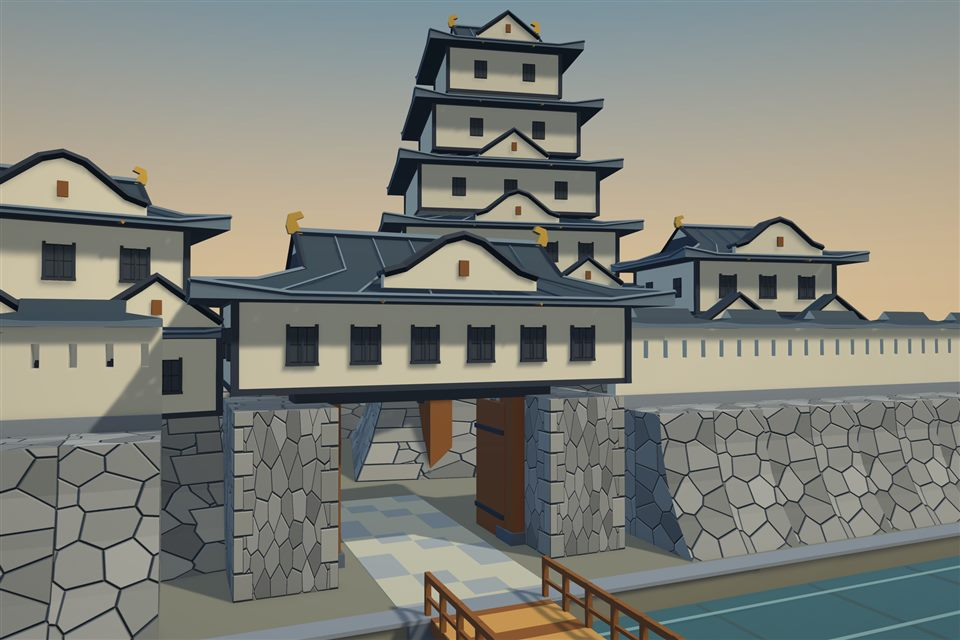
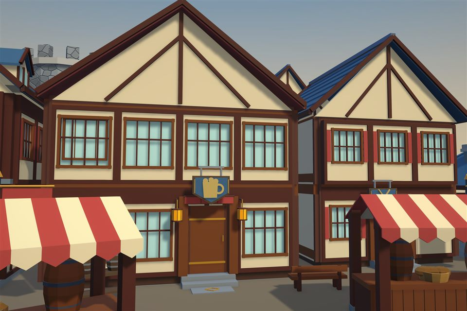
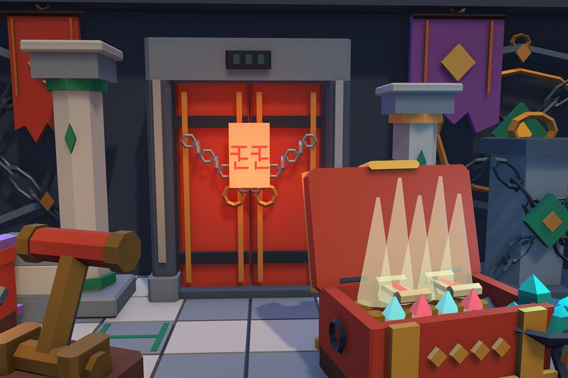
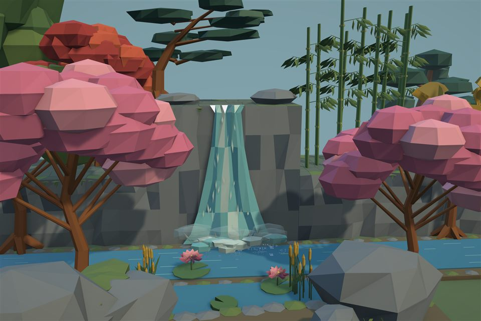
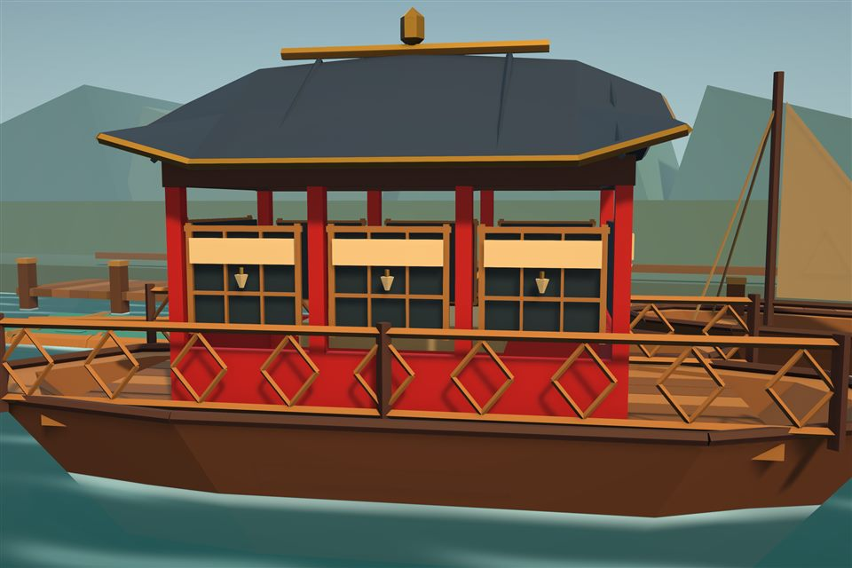
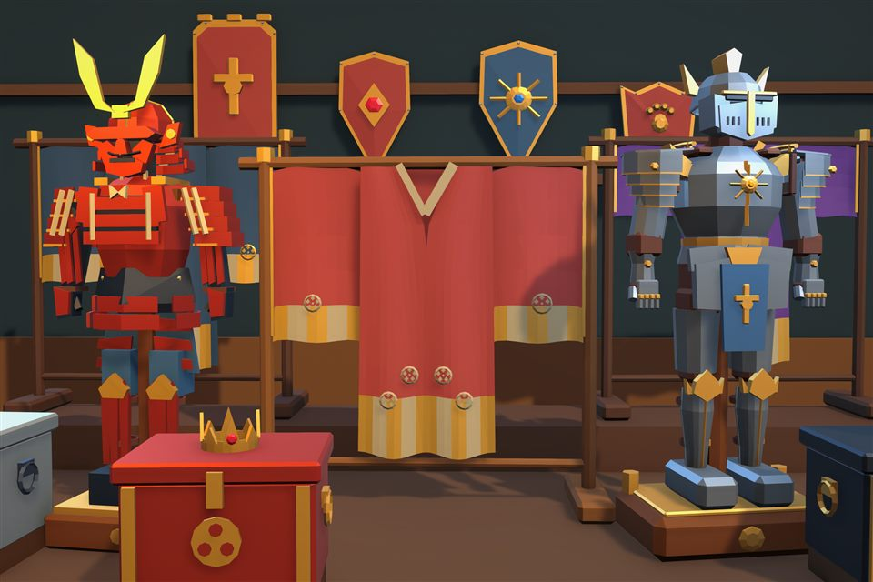
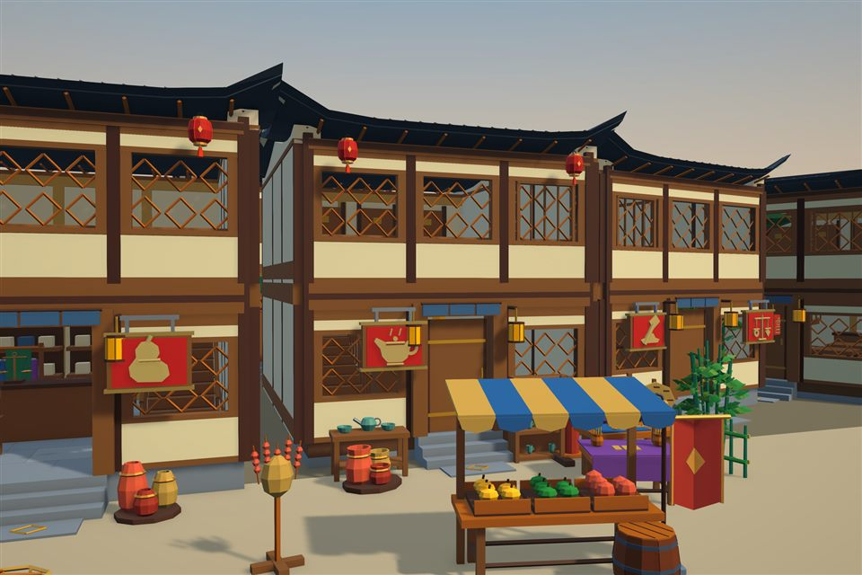

Celestial Realm Environment
Low-poly floating islands, jade palace architecture, animated waterfalls and four-layer parallax skies for URP.
Low-poly East Asian and fantasy environment packs for Unity 6 and the Universal Render Pipeline.

Low-poly floating islands, jade palace architecture, animated waterfalls and four-layer parallax skies for URP.

Low-poly Japanese street, shrine and tatami interiors for URP, with two walk-in houses and day/night shop signs.

24 low-poly Chinese and Japanese castle Prefabs for URP: keep, gates, walls, wall walks and a drawbridge.

Low-poly medieval market town for URP: walk-in tavern and Tudor house, castle walls, a working drawbridge pose and night signs.

193 low-poly dungeon props for URP: seal gates, levers, traps, four-tier treasure chests and breakable props.

Low-poly trees, rocks, cliffs and water with 29 ready-to-use weather and ambient particle effects for URP.

21 low-poly fantasy vehicles for URP with working wheel, door, sail and rudder pivots and two finishes each.

199 low-poly armors, costumes, jewelry and display stands for URP, each with a matching transparent inventory icon.

Low-poly Chinese market street for URP: walk-in shop and inn, temple courtyard, stalls, lanterns and glowing shop signs.
Every pack ships with ready-to-use Prefabs, URP materials and a demo scene, built and tested in Unity 6000.4.7f1 with URP 17.4.0. All images on this page are real-time renders of the included assets. The models are original procedural meshes made with AI-assisted Blender scripts; each store page lists the details.
Questions, bug reports or license requests: yqx.exe@gmail.com